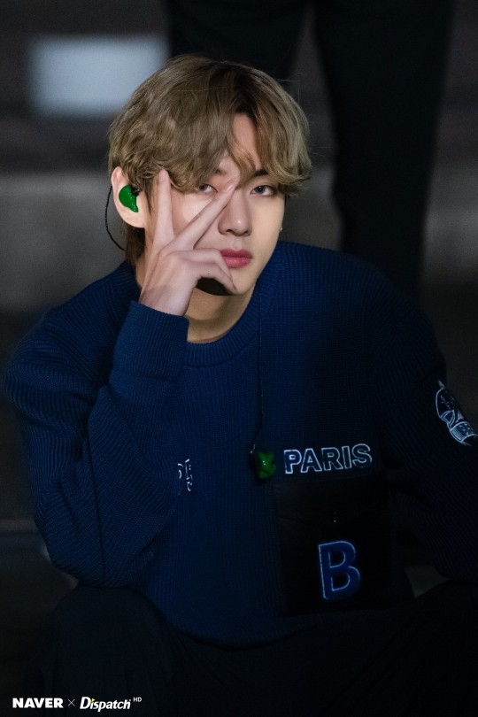
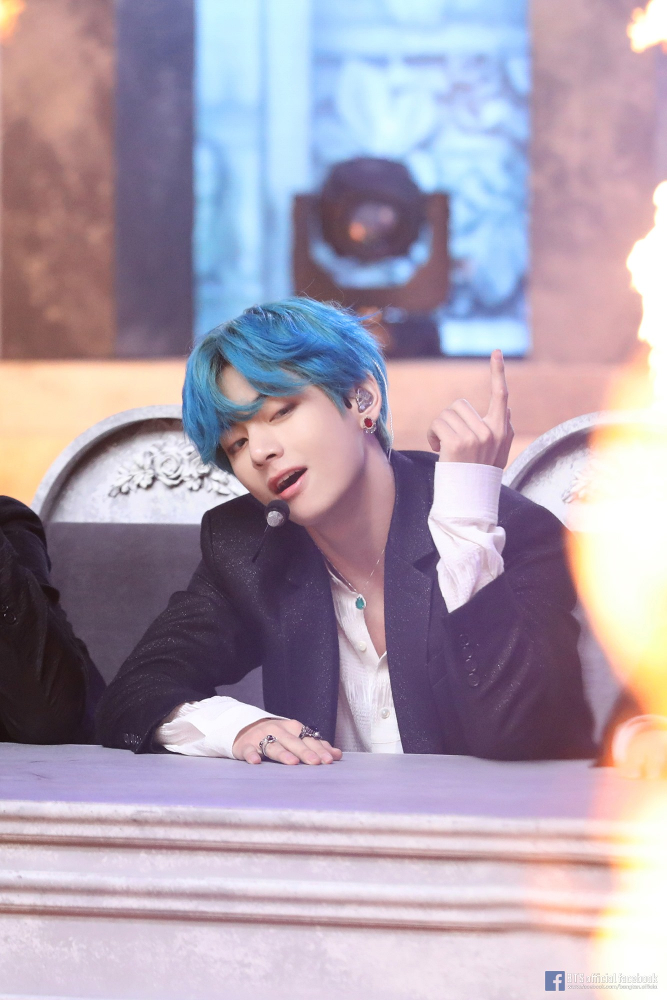

His OST "Sweet Night" ranked at #1 on one of the biggest Chinese music streaming platform and debuted straight at #1 on Melon, the most reputed streaming platform in Korea.

In 2017, he placed first on TC Candler's annual list of the 100 Most Beautiful Faces of the Year.
